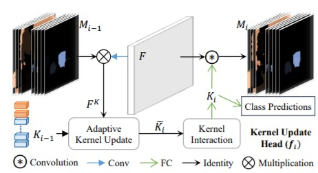

近年，Transformers在计算机视觉领域大放异彩。将transformer带入目标检测/实例分割的工作如过江之鲫，不胜枚举。而2020年Detection Transformers（detr）更是带来一种新的目标检测范式，启发了后续众多的工作。
detr简介
detr的结构如上图所示，图片经过cnn主干网络后得到特征图，加入位置信息后送入transfomer encoder，和一队可训练的object queries在transfomer decoder中进行cross attention，输出的结果经过FFN后直接得到回归框和类别分数，不需要nms等后处理，做到真正的端到端。
和传统的目标检测算法相比，detr摒弃了基于特征图的目标框回归方法，直接把目标检测视为set prediction问题，实现了对模型预测结果和图片中位置的严格绑定关系的解耦。

在训练过程中，detr的每个输出结果和ground truth进行分类损失和回归损失的匈牙利匹配，从而将每个object query和ground truth关联起来，匹配上的结果视为正样本，而未匹配上的结果视为负样本。这样，避免了传统的目标检测算法中多个预测值对应于一个ground truth的问题，从而实现对nms的去除。论文中，detr的object queries设为100或300个就可以取得很好的预测效果，远远少于yolo、centernet等单阶段检测网络动不动上万个输出结果，也要少于faster rcnn等二阶段目标检测算法上千个输出结果。由于避免了特征图和ground truth的直接关系，detr也很容易可以拓展到全景分割任务中，实现thing和stuff的统一输出。
因此，我们不难看出detr在工业应用中的主要优势：1、在复杂拥挤场景下，detr可以避免由于目标特征太近所产生的低质量目标框。虽然faster rcnn等二阶段算法理论上也可以避免这种低质量目标框，但detr作为一种单阶段算法也可以实现同样的效果，确实是一种突破。2、detr去除了nms等后处理，可以简化模型的部署代码。3、可以直接用来做全景分割。
当然，detr也存在着一些劣势，例如训练太慢（150~300epoch）、小目标检测效果差等，很多后续的论文都针对这两点展开，做了很多很有意义的工作。
一些在阅读detr源码中发现的point：
·detr没有利用fpn结构，而只利用了主干网络最后一层的特征图，这可能是造成detr在小目标检测弱势的原因。为什么不用多特征输出？可能真的用不起。transformer的attention结构将产生一个(B,N,HW,HW)的attention weights（注意力权重）。输入的特征图尺寸越大将导致这个矩阵呈二次方倍数增加，显存放不下。
·主干网络和transformer的学习率并不一致，主干网络的学习率为transformer的0.1倍，论文里也没解释为啥（莫名又多引入了超参数）。个人认为，引入了二分匹配的transformer较难训练，可能会发生较大的动荡（输出结果和ground truth匹配变来变去）。所以detr的主干网络都是经过预训练过的，这本质上是一种迁移学习，所以需要将主干网络的学习率做的比较小。
·在mmdetection中实现的detr回归的gt bbox是经过归一化的，而gt bbox归一化所用的长和宽是输入图片的resize后的长和宽，而非padding之后的尺寸。如果你训练和推理阶段图片输入大小相差较大，或者做了不同预处理手段，则可能造成推理时回归框偏差严重。
1 | tgt = torch.zeros_like(query_embed) |
·在transformer decoder输入的object queries只有queries pos是可以被训练的，而query每次都被初始化为0(上述代码中的tgt)，这造成了transformer decoder的第一层self attention的输出结果都是0。个人认为object queries本质上起了类似一种可训练anchor的作用，object queries本身并不带有和图片内容相关的先验信息，也不应该有，因此携带位置尺寸等信息的queries pos是可训练，而query在被初始化为0，只有在和特征信息进行cross attention后query才带有真正有用的信息。
一些基于detr启发论文：
目标检测
Deformable DETR
为了解决DETR训练慢和在小目标物体检测效果差的问题，Deformable DETR提出可变形transformer结构。Deformable DETR认为造成detr训练慢的原因在于transformer的注意力机制需要对特征图全局密集的关系进行建模，使得模型需要长时间才能学习到真正有意义的稀疏位置。因此，Deformable DETR舍弃了每个query要和key点乘想法，而是自适应的采样K个点作为attention weight和value进行交互（当采样1个点时，deformable transformer退化为1×1的dcn,当采样所有点时，deformable transformer变为正常的transformer）。
如图所示，Deformable DETR利用了不同level的特征图，即deformable transformer的采样并非集中在同一层，而是可能来自其他level的特征图。通过这种方式Deformable DETR实现对小目标物体的精度提升。此外，Deformable DETR不再直接回归gt bbox，而是回归一个偏移值来加速回归框的收敛：
1 | reference_points = self.reference_points(query_embed).sigmoid() |
deformable detr解决了detr的小目标检测弱和训练步数太长的问题（仅用了50个epochs，相比detr缩减2/3），但deformable transformer作为一种新算子给deformable detr的部署带来了相当大的问题。若想在工程中实际应用，可能还要面临手写tensorrt算子的问题。
Conditional DETR
针对detr训练步数太长的问题，conditional detr认为在decoder中，detr的query要同时和key中的content embedding以及spatial embedding做匹配，detr高度依赖高质量的content embedding去定位物体的extremity区域，而这部分区域恰恰是定位和识别物体的关键（就是query既要参与实例的空间位置计算又要参与实例的类别计算）。因此，conditional detr将原detr中decoder的cross-attention部分进行解耦，并提出conditional spatial embedding。Content embedding只负责根据外观去搜寻跟物体相关的区域，而不用考虑跟 spatial embedding的匹配; 对于spatial部分，conditional spatial embedding 可以显式地定位物体的 extremity 区域，缩小搜索物体的范围，如下图所示。
Sparse R-cnn
Sparse RCNN借鉴了detr set prediction的思想对faster rcnn进行了非凡的创新。Sparse R-CNN去除了faster rcnn的RPN结构，利用可学习的proposal boxes代替（和detr中的object queries非常类似），如下图所示：
Sparse RCNN在训练速度上大大优于detr，精度上也到达了不错的水平，不过又把恼人的roi align加了回来，所以在部署上并不占优。
实例分割/全景分割
Solq
Solq这个名字非常像2020年的单阶段实例分割算法SOLO，但实际上算法原理更像是deformable detr和dct mask的组合。
如上图所示，solq在deformable detr的decoder多增加了一个dct（离散余弦变换）分支（非常像mask rcnn的mask head分支）用于预测当前实例的掩码。使用dct相比逐像素预测给实例的掩码轮廓带来的更强的鲁棒性。
Maskformer
和Solq相比，Maskformer更像是detr和SOLO结合的产物。Maskformer利用queries得到每个实例的类别和mask kernel，mask kernel和特征图进行卷积得到每个实例的掩码（非常的SOLO），如下图所示：
K-Net
和Sparse RCNN相似，K-Net也没有直接利用transformer，K-Net送入一组可学习的object feat（类似object queries）经过ffn后得到每个实例的mask kernel，mask kernel和特征图进行卷积得到每个实例的掩码，随后利用得到掩码经过kernel update head对object feat进行更新，经过几次更新后得到每个实例的类别和掩码（其实整个结构也很类似去除了encoder的transformer），如下图所示：

相较于Maskformer而言，K-Net利用了更大的特征图进行cross attention，而显存占用反而更小，训练速度上也要更快（50个epochs）。